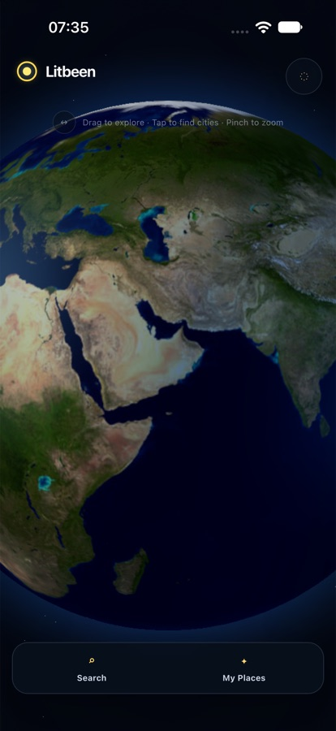
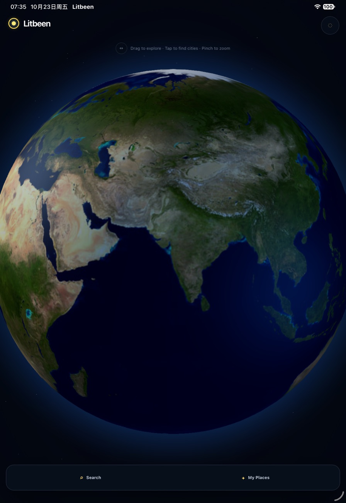

Explore
Rotate the globe, pinch to zoom, or search the worldwide city catalogue.
Personal travel, beautifully remembered
Litbeen turns your travel history into a living 3D Earth. Find a city, mark the places that matter, and watch your own map glow—one memory at a time.

A calmer way to remember
Litbeen keeps the Earth at the center. Travel memories appear as restrained golden beacons, without turning your journey into a feed or a competition.
Rotate the globe, pinch to zoom, or search the worldwide city catalogue.
Mark only the cities you visited. Each one becomes a precise golden beacon.
Browse My Places and make a portable JSON backup whenever you choose.
Private by design
Litbeen 1.0 has no user accounts, advertising SDKs, analytics SDKs, or Litbeen cloud database. Your marked places are stored locally on your device. Optional Wikipedia place details are requested only when you ask to explore a city.
See exactly how data is handledNo accountNo sign-up or profile.
No ad trackingNo advertising or analytics SDK.
Your backupExport and import on your terms.
Made for every view
Litbeen adapts across iPhone and iPad, in portrait or landscape.

Litbeen for iPhone and iPad
Version 1.0 is being prepared for the App Store.
View support and user guide